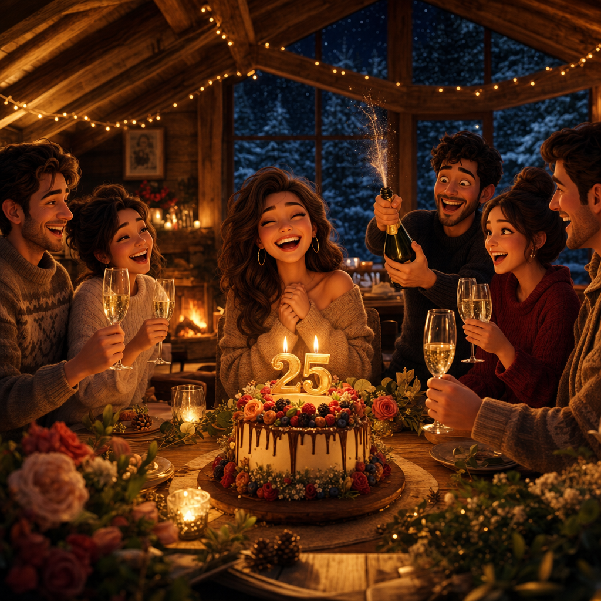
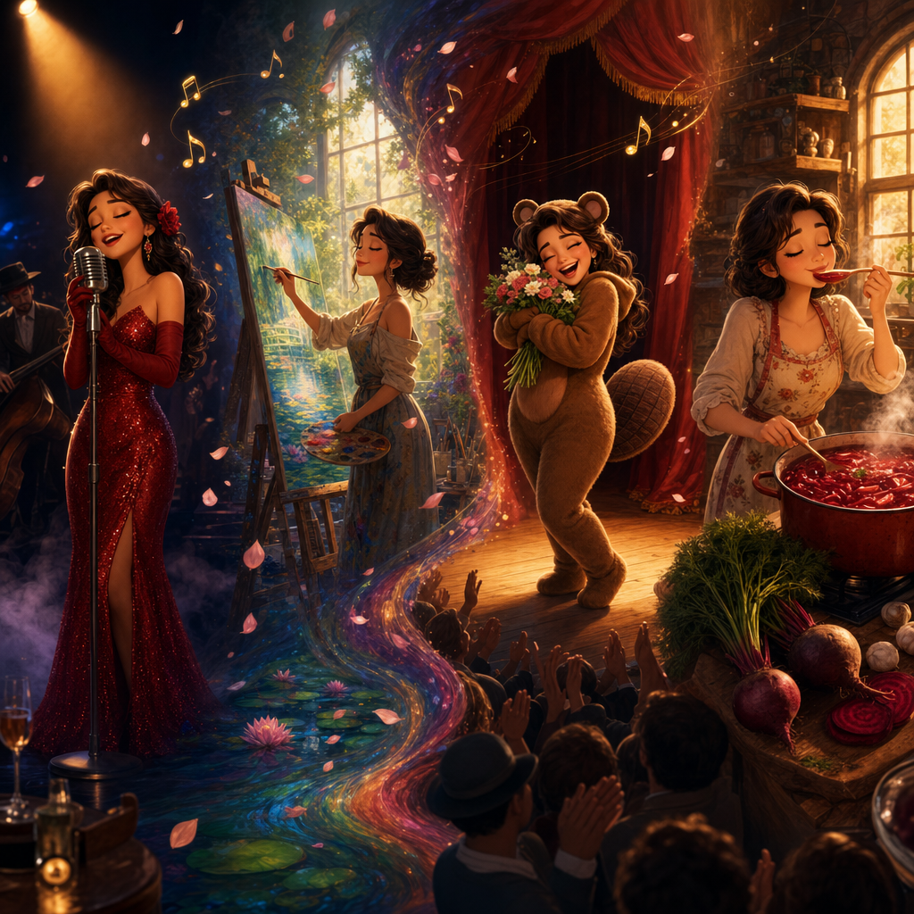
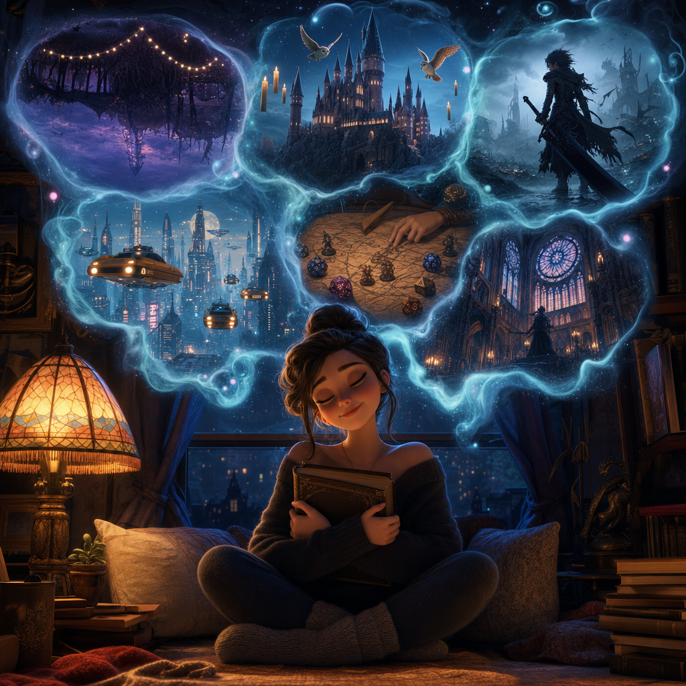
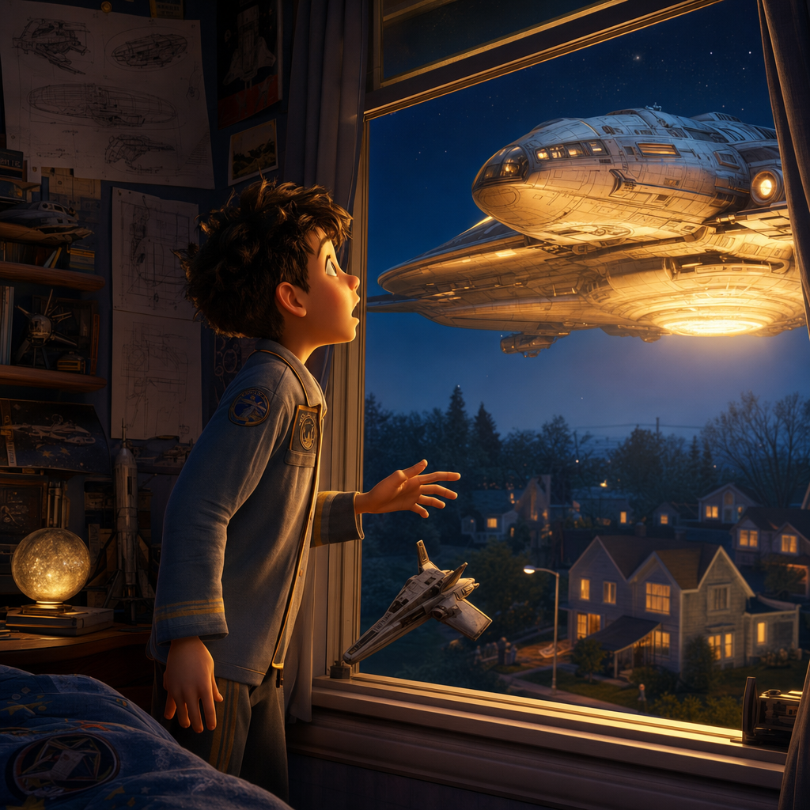
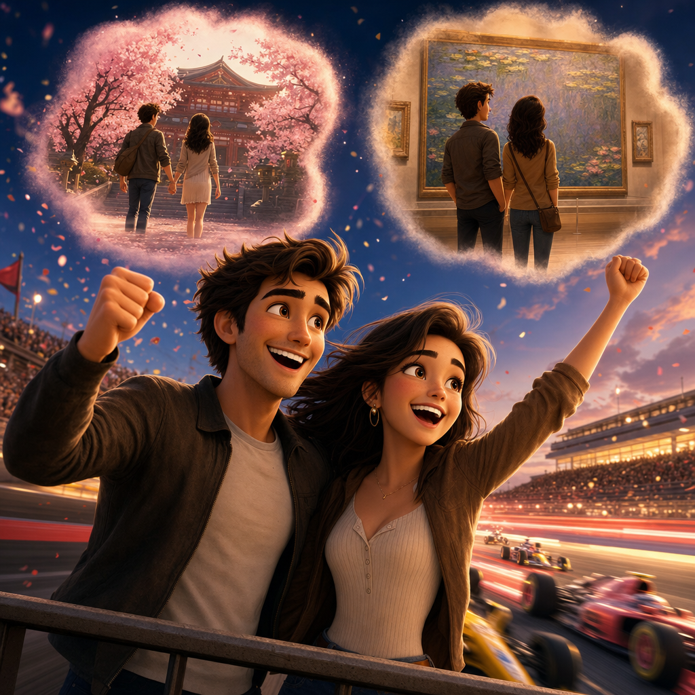

THE STORY BEHIND THE STORIES 💖
About Learnime
This is a project of love.
My love is twenty five 🎂
the whole project was born because i want to make a special gift for my girlfriend Madie. She is celebrating her 25th birthday with her family and friends in Romania, and I am stuck in Israel. so of course i will send her flowers and cake, but I want to make her pure heart happy, to make her feel like she is the most special and most loved person in the world, which she is. so i offered her two options, asking what will bring her more enjoyment: opera based on her life (through metaphors) accompanies by music from romantic-era classical music composers, which i will play on the piano with VR ; OR ; anime science fiction film, where the main character is based on her, but the plot is made up. so being a very private person, and being a huge fan of anime, and being that she is a normal person, not a super nerd like me, she naturally chose the anime :-)

Madie is a Renaissance person 🎻🎨✍️🎭
My girlfriend embodies in her life and art the wonderful cocktail of talents that she has naturally; and here we try to give to the public a taste of this with the help of AI. Madie is good in every art she touches, like the great masters of the past, who did not limit themselves to only one art form. She learned painting and her paintings are both deep and a treat for the eyes; she studied voice-training and her soft voice brings to tears (of happiness!!!) ; she practiced theater and her performance is breath-taking ; and her cooking is fingers-licking good. All these are results of her true natural talent together with her dedication and practice. My love is both smart and hard-working. so inspired by my beautiful muse, i wanted here to give the public this satisfying feeling of combining different forms of art. Madie does this with her natural gifts and creative spirit ; we ordinary people "fake" it by asking AI for help :-)

Free spirit flying on wings of imagination 🌙
My soul Madie loves to imagine, here are some of her favorites in various art forms: the super-natural horror TV series "Stranger Things" ; the fantasy novels of "Harry Potter" ; the role-playing game of "Dungeons & Dragons (D&D)" ; the dark fantasy anime of "Berserk" ; the science-fiction movie "The Fifth Element" ; and in design her favorite is the Gothic architecture. so what i try to do in my gift to her which is this project, is to incorporate as much as i can of these styles that she enjoys in the worlds that we create here together. to combine that magical intuitive free imagination power that Madie brings, and in each twist and turn i try to add my own "how does it work" scientific technical approach, so i hope in this way the project is both exciting like Madie and educational like me. if it turns out to be boring it's because of me :-)

It's all real — our favorite movie together "Galaxy Quest" 🔎
in our favorite movie that we watched together — "Galaxy Quest" — the most powerful quote that actually "makes" the whole movie is "it's all real". if you did not watch this movie, stop everything right now, watch it and come back. ok welcome back. so in this movie a group of actors of a sci-fi space show are taken to real outer-space by advanced alien civilization, which thought by mistake that the fictional television show is real documentary, and the aliens built everything for real. the human actors crew, who at the beginning of the movie are just helpless "fake" pretenders, grow mentally through their adventures, and gradually become the heroes that they portray in real life. so in this specific scene, the captain is calling for help to a group of fans, who know everything about the technical details of the spaceship. in the beginning of the film, the actor scolded the fan, telling him this is just a TV show, not real. but now, the roles are reversed: the teenager here on Earth tells the Captain: i know it's just "make-believe" ; but the Captain stops him and reveals to him the truth: "it's all real". of course the kid is thrilled and confess: "i knew it!!!" . so i hope through our worlds, we will all have such epiphany moments together, seeing how through real science and technology we can make magical things. like in the same spirit of the enchanting film "The Flight of Dragons". and by the way, even the creating process itself, on a small scale, is taking the magic and learning how to build it together :-)

My dreams are to make Madie's dreams come true 🌍
My girlfriend sometimes is annoyed at me that i don't have my own dreams. that all my dreams always come down to fulfilling her dreams and to make her happy, and through this i am happy. this whole project, like all my other projects, is done with the hope of enabling my Madie to live her modest dreams together with me: We wish to travel to see her favorite paintings in Paris, the temples of ancient Japan, the exhilarating rush of adrenalin in Formula 1 race. We wish to live as digital nomads, travelling around the world while raising a small family together, and producing more creative projects for you guys. all my projects are 100% free, but i hope that with collaborations, interviews, books, etc, i will be able to support my Madie. this is all that i want in life. if each of you share this, it enables me to keep working for you, and to make my Madie happy.
Thank you so much!!! :-)

And you? 💌
If any part of this story feels like your story too — a beginner, a dreamer, someone who was told this world was locked — the door is open.